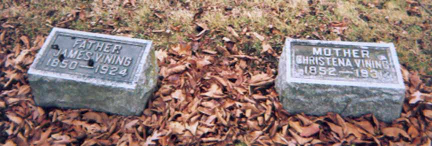
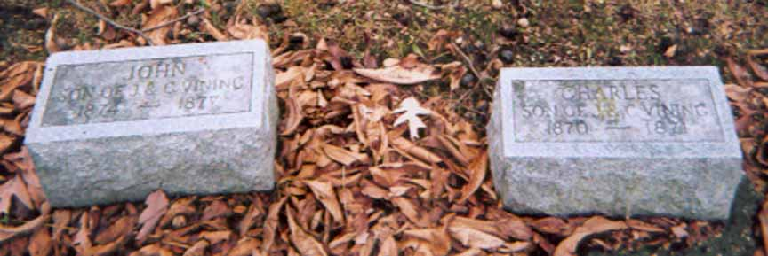
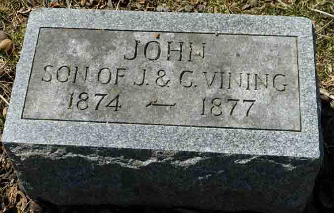
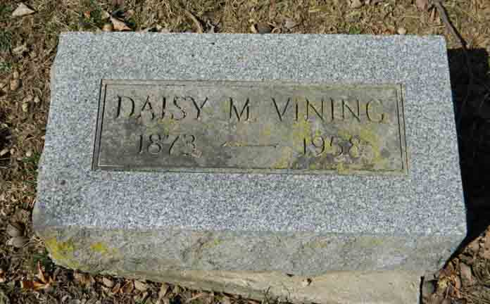

Census Data
| 1870 | 1880 | 1890 | 1900 | 1910 | 1920 | 1930 | 1940 | |
| James Thomas Vining Jr. | ? | 31[?] | ? | ? | ? | ? | dead | |
| Christena (Shoub) Vining | ? | 29 | ? | ? | ? | ? | ? | dead |
| Charles Vining | ? | dead | ||||||
| Daisy M. Vining | 8 | ? | ? | ? | ? | ? | ? | |
| John R. Vining | dead | |||||||
| Clara Vining | 11 m. | ? | ? | ? | married and living in separate household | |||
| Thomas Earl Vining | ? | ? | ? | ? | ? | dead | ||
| Edna P. Vining | ? | dead | ||||||
| Cecelia (Celia) Joe Vining | ? | ? | ? | married and living in separate household |
Death Data
Gravestones for James Thomas Vining Jr. and Christena (Shoub) Vining, in Oak Grove Cemetery, Delaware, Delaware County, Ohio:


